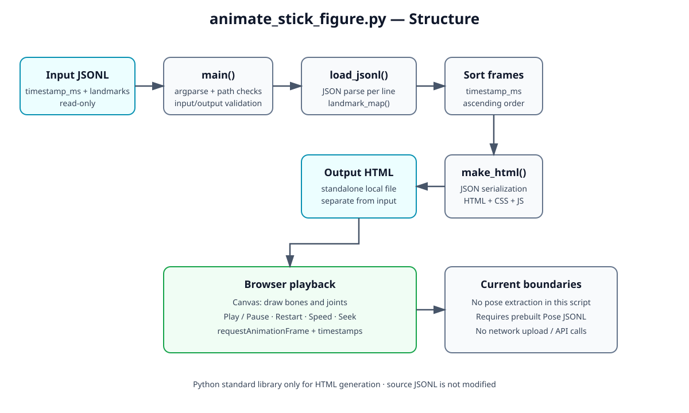
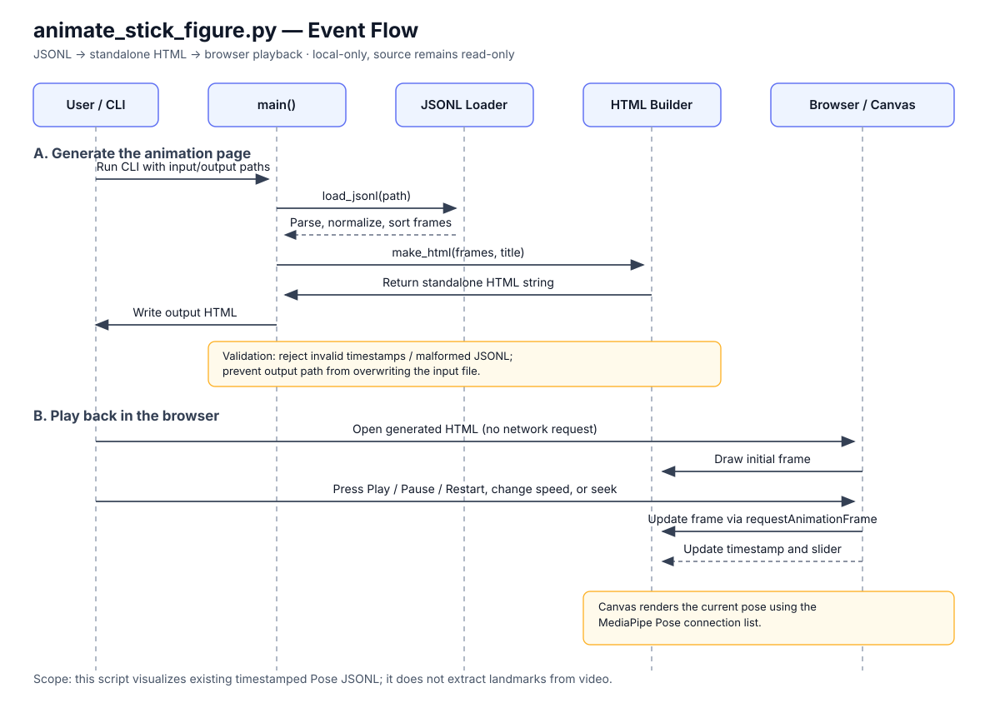
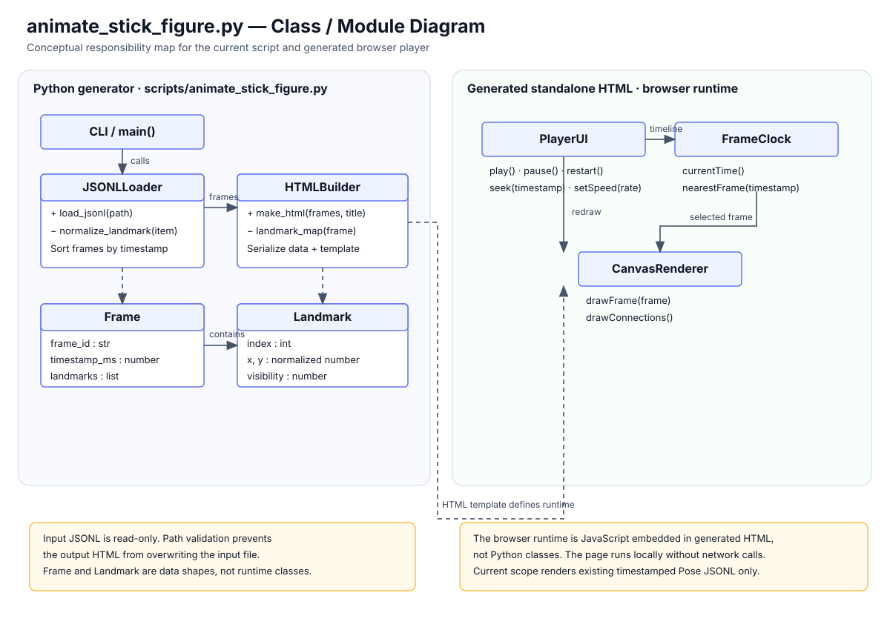
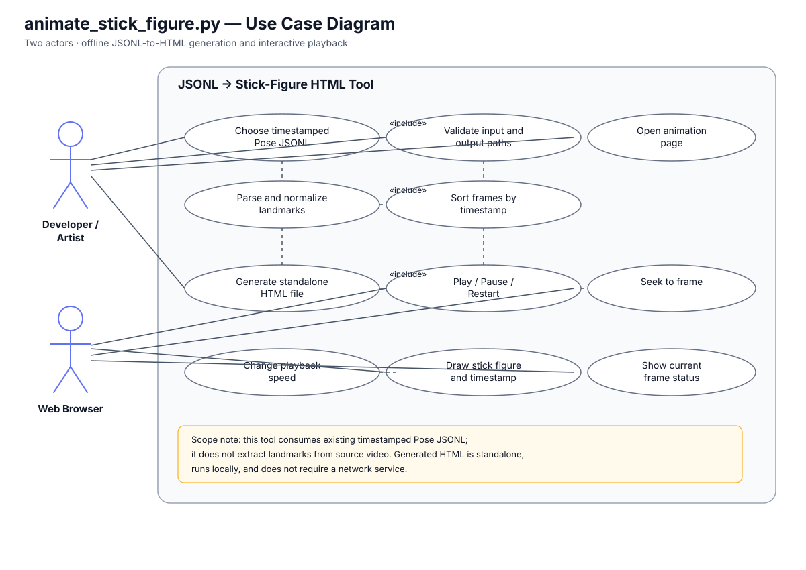

wf/
Defines pipeline topology, stages, edges, and gates.
A navigable overview of the local video → pose data → stick-figure playback workflow, its contracts, and its design diagrams.
Branch: feat/local-stick-figure-dance · Source media stays local and unchanged.
The current stick-figure script consumes existing timestamped Pose JSONL; it does not extract landmarks from video itself.
wf/Defines pipeline topology, stages, edges, and gates.
aw/Defines agent responsibilities and separation of duties.
openapi/Defines the pose request/response interface.
contracts/Machine-readable schema for saved Pose artifacts.
units/pose/Acceptance and reuse notes for the isolated pose unit.
src/ and tests/Existing pose overlay/render modules and regression/contract tests.
animate_stick_figure.pyReads timestamped JSONL, validates/sorts frames, and emits a self-contained HTML animation.
Canvas-based stick figure with play/pause, restart, speed, seek, and timestamp display. Open the generated file locally in a browser.
Run with a representative timestamped Pose JSONL, inspect playback, then compare it against source frames.
Each diagram has a viewable SVG and editable PlantUML source. Keep both formats aligned when the script changes.
Files and major responsibilities.

Playback events and state transitions.

Logical classes and responsibilities.

User actions supported by the playback page.

artifacts/. Check each CLI's --help before running.